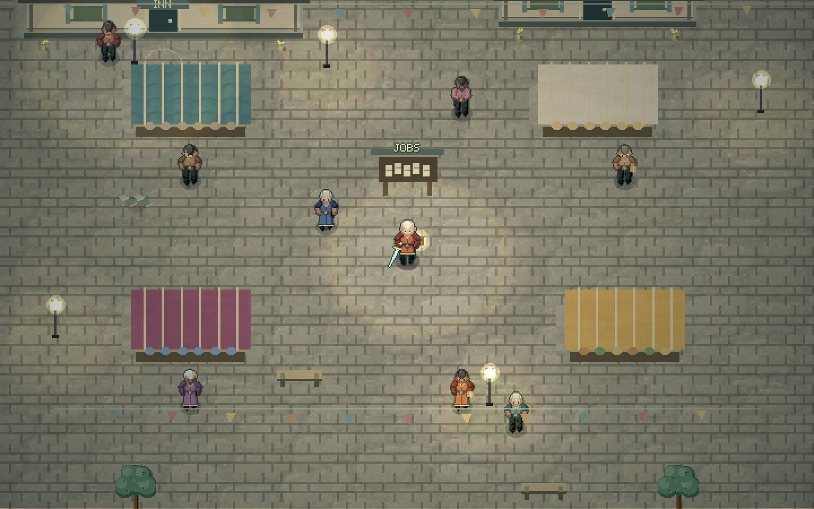
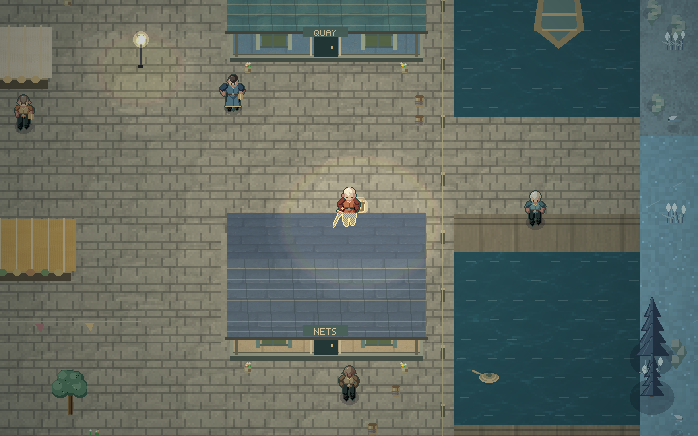
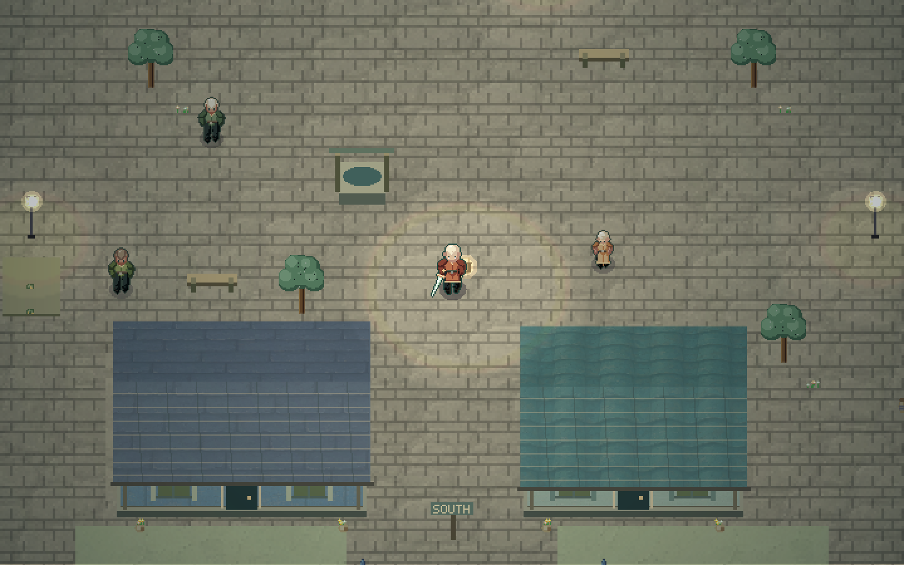
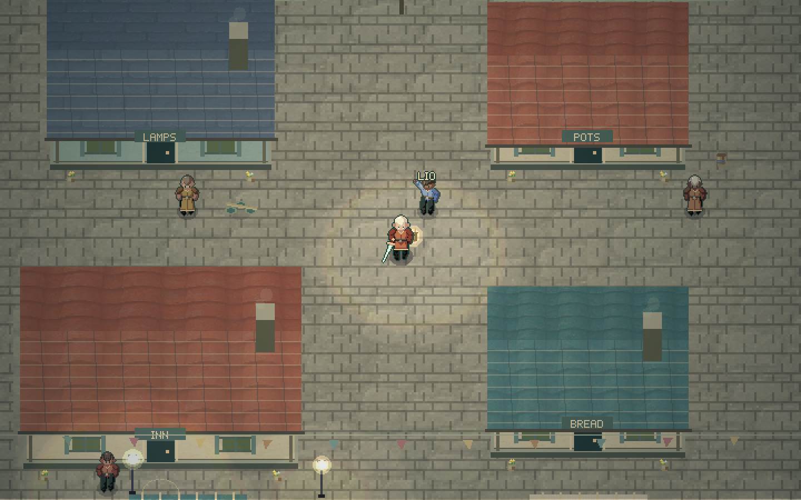

Start in the overworld
Choose Explore the overworld on the title screen. You arrive beside the job board in Wickhaven. Mara starts with her blade, tide lantern, seven full hearts, and six echoes. You can walk into the world immediately.
After the first save, the same button reads Continue field test. New field test starts over after an in-game confirmation. The pause menu also offers the overworld test start from a normal journey.
The Field Test and the dungeon journey have separate saves. Starting outside does not defeat the Warden, ring the bell, grant the Bell Seal, or solve a dungeon puzzle. You can enter the sanctuary and leave it again before completion. A normal journey still begins at the original approach and earns its automatic exit by completing the dungeon.
A fresh Field Test uses the published Open Reach. Its world definition stays with that saved run. Later World Workshop changes do not replace it. Workshop preview remains a temporary authoring session. Normal journeys, saved field tests, and temporary previews have different purposes and save behavior.
A useful first test session
- Press E beside the board. Take Meet the neighbors, Bread for the quay, and Blue-thread salvage. You can carry three jobs.
- Open My work with B. Pin the job you want to follow. The HUD names the next stop and shows its distance in tiles.
- Collect the parcels from Pell. Visit Bram at the quay and Sela in the garden. Talk to people along the way.
- Collect the three blue bundles with E. These bundles appear while the salvage job is active. Take them to Neri.
- Return to the board. Finished jobs open on the payment page. Claim each payment once.
- Visit Neri or Suri. Buy a coat, a packed meal, or both when you have enough echoes. The coat changes Mara’s visible colors. A meal restores up to three hearts.
- Take one terrain job and one wildlife or patrol job. Follow the map into the world. Use Escape → Return to Wickhaven when you want to return.
- Press N to record a test note. Download the report when you finish your session.
You can leave a job without a fee. There are no deadlines or required order. Exploration, citizen conversations, and the roads remain available without an active job. Death and return to town keep accepted work and collected proof.
Controls and services
| Control | Action |
|---|---|
| WASD or arrow keys | Move |
| J | Strike; hold for the blade combo |
| Space | Dash |
| K | Pulse the tide lantern |
| E | Talk, inspect, observe, collect, or use |
| M | Open the current map |
| B | Open the field journal |
| N | Open local test notes |
| H | Use one packed meal |
| Escape | Pause, open settings, recover, or return to title |
The header’s book button opens the journal. The pause menu gives access to work, notes, and recovery. These controls also support users who do not use the keyboard shortcuts. The existing touch and controller game controls remain available.
The inn restores all health and sets the town checkpoint for free. Return to Wickhaven is also free. A packed meal costs 6 echoes, heals up to 3 hearts, and has a carrying limit of 3. A meal is not spent at full health. Harbor-blue, moss-green, and cinder-red coats cost 18 echoes each. Owned coats can be equipped again without another purchase. Coats do not change combat strength.




Staged town scenes rendered through the actual game engine. These are visual fixtures, separate from browser and earned gameplay evidence.
The town and its citizens
Wickhaven has four connected districts, 22 named citizens, 14 building fronts, and four market stalls. Its streets connect to the existing world through a marked causeway. Buildings are exterior landmarks. The inn and shops provide walk-up services.
| District | Places and people |
|---|---|
| Bell Square | The job board, inn, bakery, and market. Renna keeps the notices. Tova runs the inn. Pell bakes, Neri makes cloth, Dima makes pots, Edda carries messages, Tansy performs, and Emon trades travel stories. |
| Rope Quay | Piers, boats, nets, cargo, a dock store, and a net maker’s front. Bram keeps the dock, Ivo mends nets, Vey fishes, and Corren repairs woodwork. |
| Lantern Lane | A map room, lamp workshop, potter’s front, guard post, and workshop lane. Fenn maps roads, Lio reads weather, Kesh makes lamps, Olan repairs footwear, Harl tends the kiln, and Vale watches the roads. |
| Orchard Close | Homes, a shared garden, a well, benches, and the carpenter’s front. Una studies wildlife, Suri supplies remedies, Sela gardens, and Nell studies. |
Citizens have personal dialogue, different clothes and builds, local movement routes, pauses, and reactions when Mara approaches. They are separate from hostile creatures. They cannot block a street or receive combat credit. The town is safe from combat damage.
The visual work includes colored roof materials, shutters, windows, door frames, projecting signs, striped awnings, displayed goods, chimneys, smoke, lanterns, flower pots, garden beds, trees, bunting, benches, barrels, rope, boats, and quay rails. Cloth, smoke, lights, and citizens animate through the existing game renderer.
Work on the board
Every job records proof from actions in the game. Reading a notice or opening the journal does not complete it. The board offers work only when the current world has suitable targets.
| Job | What you do | Payment |
|---|---|---|
| Meet the neighbors | Speak to a citizen from each of the four districts after accepting. | 8 echoes |
| Bread for the quay | Collect two parcels from Pell; speak to Bram and Sela to deliver them. | 10 echoes |
| Marks along the road | Inspect two selected landmark interactions with E. | 14 echoes |
| Current notes | Pulse while standing in the marked shallow current, then walk two tiles inside the calm area. | 12 echoes |
| A firm path through the reeds | Pulse on the marked mire, then walk two tiles through the treated area. | 14 echoes |
| Shelter from the wind | Pulse on wind grass, walk two tiles inside the calm area, then reach a road. | 14 echoes |
| A grip on winter | Move on the marked ice, pulse, walk two tiles in the light, then leave the ice. | 14 echoes |
| Cool the cinder path | Pulse from within five tiles of the marked vent. Firm ground beside it is suitable. | 16 echoes |
| The sound of pale grass | Dash through the marked echo grass to cause an alert, then pulse on that patch. | 14 echoes |
| A page of living things | Observe three different wildlife species across at least two biomes with E. | 18 echoes |
| Roadkeeper’s round | Defeat three different hostile creatures outside town. | 18 echoes |
| Blue-thread salvage | Collect three marked bundles, then deliver them to Neri. | 12 echoes |
Landmark markers point to their actual interaction positions. Citizen targets follow the citizen while nearby. Wildlife markers advance by species, and the selected destinations include more than one biome. Animals can be observed across water; rocks and walls block the view.
Jobs can be repeated. Each acceptance has a new instance. Repeated contact with one delivery recipient, one bundle, or one defeated enemy does not add duplicate proof. A completed job pays once. Patrol offers use creatures that have not already been permanently cleared.
Custom worlds retain introductions, delivery, and salvage work. Zero danger removes patrol and vent jobs. Zero detail removes the wildlife job. A missing biome or a failed bounded target search removes the affected terrain notice. A world with fewer than two suitable landmarks does not offer the landmark job.
Record a play-test result
The Field notes page has a category, a result, and a text field. Describe what you tried, what happened, and what you expected. Saving a note attaches the build, session, world seed and fingerprint, tile position, biome, ground, surface, health, active job IDs, graphics mode, frame-rate sample, and streaming counts.
The game keeps up to 60 notes and 80 recent meaningful events. It does not record raw key input. The report is a JSON download created on the device. The game does not send it to a server. Share the downloaded file when you want another person to read it.
After payment, optional feedback offers Clear, Hard to follow, or Something failed. Payment has already been saved. Feedback never gates the reward.
A field report provides useful context for a test result. It is not a replay file. A frame-rate sample is an observation from one environment, not a device performance guarantee.
Delivery review: why this design
The requested change has two goals. The overworld must be easy to enter, and it must provide a reason to explore. The strongest response is a complete local loop: choose work, travel, use a system, return with proof, earn a reward, and make a small equipment or supply decision.
The town provides a clear point of return. Its square contains the board and nearby citizens. The quay, lane, and garden give the town distinct destinations. The first jobs teach these places through delivery and conversation. Later jobs lead into the six existing biome mechanics. This makes the town useful to play testers and gives it a role in the game’s world.
The separate Field Test save is a central decision. A skip button that changed the journey’s completion flags would make later results ambiguous. Here, the player can test outside with useful tools while the dungeon remains incomplete. A tester can also compare the normal journey and the field run on one device.
The work stays free-form. Three active jobs allow a short combined route without filling the HUD. Counts are small enough to expose a system quickly. Free rest, free return, and free abandonment reduce time spent repeating travel after a problem. Optional jobs and cosmetic rewards preserve the choice to explore without a checklist.
The rewards give the loop a visible finish. A coat changes the character that the tester sees for the rest of the session. A meal supports another trip. The existing echoes currency covers both. There is no second currency to learn or a new progression gate that blocks testing.
Engine and technology choices
The game still uses my-3D2dge game edition as its foundation. This update keeps its fixed-step game loop, input bindings, bodies, collision, humanoid rigs, animation, queued drawing, lights, audio, particles, and storage helper. It extends the existing game instead of replacing the foundation.
The town’s collision and placement live in the same sampler used by rendering, movement, the Workshop map, and streamed chunks. A building has one footprint. Roads, safe ground, water, and building heights therefore agree across these systems. The town deliberately changes a bounded local area. It does not change the world’s canonical definition or save fingerprint.
A short causeway is selected against the original road predicate. Its corridor avoids existing landmark footprints and walls. The rest of the generated world remains compatible. Checks compare 3,547 gameplay terrain samples and 1,087 legacy props outside the town footprint against the historical source.
The runtime retains its existing limits: 49 terrain chunks, 12 floor images, 18 hostile creatures, 24 ambient animals, and 2 concurrent generation requests. Town citizens have a separate limit of 22. Their rigs are created for the town, while nearby movement updates and view culling keep distant work bounded. This release has one authored town; it does not simulate a population across the entire world.
The implementation uses small ES modules. town-data.js defines the layout, cast, and shop. town-runtime.js handles the town’s appearance and citizens. fieldwork.js owns job eligibility, proof, payment, saved records, and notes. fieldwork-ui.js supplies the journal and citizen screens. game.js owns the session, actual action events, currency, and recovery. The static build continues to use the existing Vite dependency and lockfile.
HTML dialogs remain separate from the Canvas scene. That keeps form fields, job descriptions, and map controls readable when a graphics filter is active. The existing optional WebGPU cel-shaded and pixel-art filters and their adjustable parameters remain available. Their shader implementation did not change in this update.
The town uses a new original 16-cell material atlas. The engine combines these materials with authored building geometry, palette choices, signs, props, and animated rigs. The result can be extended with new buildings and citizens without baking the town into one flat background.
Effort allocation and review decisions
Most implementation and review effort went into state integrity and the job loop: separate saves, pinned world definitions, actual action proof, duplicate rejection, one-time payment, and recovery across region changes. These are the systems that can make an attractive town fail as a playable test environment.
The next large share went into spatial design and art: readable districts, varied building fronts, a strong square, many citizens, small details, collision, and a reliable road connection. Route review found four citizen paths that crossed a stall, a building corner, or water. Those paths were corrected before the earned route test.
Interface work focused on reaching the activity quickly and understanding the next step. The title has an explicit outside start. The board opens earned payments first when work is ready. The journal can pin a route, open the map, equip a coat, use a meal, or record a note. The narrow-screen review led to a two-row tab layout so all journal pages remain visible.
Review and asset work ran in parallel with integration. The final integration remained in one checkout. This allowed independent checks of geometry, targets, saves, and the complete reward loop without conflicting source edits.
Review found and fixed real defects: colons in job IDs broke CSS selectors; wildlife markers compared display names with species IDs; a camp marker used the road entry instead of its interaction point; a causeway could cover a non-solid grove; status snapshots retained mutable nested references; and water blocked fish observation. Each received a focused verification.
Verification and practical limits
The verification record separates earned play, controlled fixtures, and browser inspection.
| Check | Evidence and scope |
|---|---|
| Earned dungeon route | The actual game input harness starts a fresh journey, completes the dungeon, and reaches the overworld. Rendering and audio use test adapters. |
| Earned town loop | 5,168 engine steps. Real walking and E input collect bundles, reload after bundle two, deliver to Neri, claim payment, buy the blue coat, save a note, reload, repeat a bundle, and abandon the repeat. No proof, money, item, or position is injected. |
| Six terrain jobs | 1,188 engine steps. Labeled saved-position fixtures place accepted jobs near their targets. Actual movement, dash, and lantern input earn the proof. Wrong actions, cooldown reuse, and claims away from the board fail. |
| Town layout | Ten default and custom layouts pass service, citizen, bundle, and route checks with player clearance. |
| Causeways | 65 default and custom cases connect to the original roads and preserve old landmark footprints. The earlier 60-case high-water review also found an open exit in each case. |
| Save and transaction behavior | Field Test does not overwrite the journey. Jobs survive pause, page exit, retry, return, title, and continue. The unfinished sanctuary can be exited. Applied Workshop changes do not replace the saved test world. |
| Browser | Desktop start, continue, board acceptance, journal, map controls, movement, Renna dialogue, note save, and JSON download were exercised. A 390 × 780 CSS viewport checked the title, journal, and note form. This is a responsive browser fixture, not a physical phone test. |
| Native visuals | Four town scenes render through the actual engine with the native Canvas adapter. They are staged visual fixtures. They are not browser playthroughs or hardware benchmarks. |
The browser preview stopped once during the responsive check and recovered. The completed browser screenshots and downloaded report are retained in the evidence folder.
Physical touch and controller hardware, audio listening, representative device frame rates, and browser WebGPU behavior across devices remain outside this update’s completed checks. The existing automated shader and fallback tests remain available. A smooth performance target for a device class needs measurements on that class.
Extend the framework
Add citizens and local routes through the town data module. Keep interaction points on walkable ground and run the town geometry check. Add jobs by defining eligibility, saved progress, an actual event that proves the action, the next target, and a completion rule. Reuse the payment transaction rather than granting currency in a dialog.
The World Workshop still owns the broader terrain, regions, roads, landmarks, zones, validation, undo, redo, import, export, and preview workflow. Wickhaven is placed automatically near the sanctuary. It is not yet a draggable settlement template. The guide and tests make that boundary explicit so future authoring work can extend it deliberately.